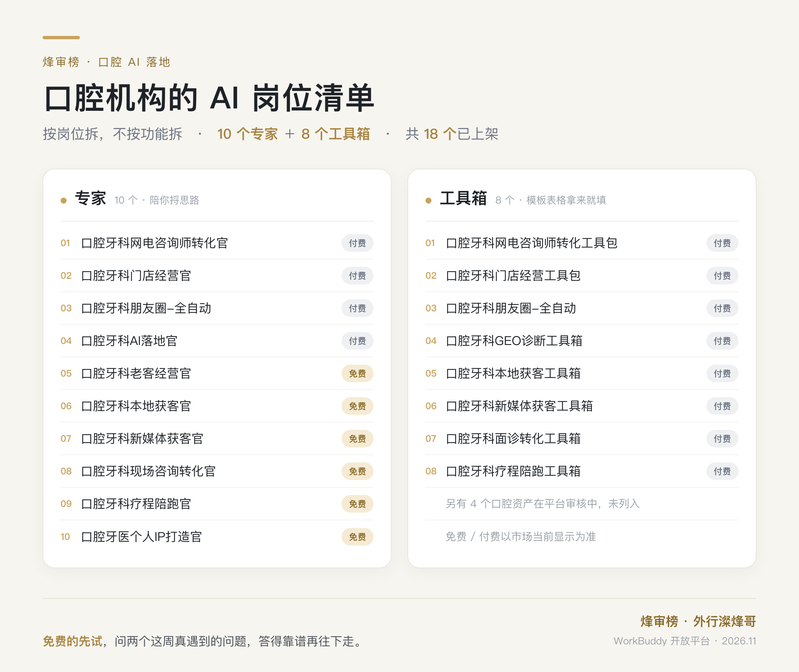

有个机构老板问我：AI 到底能帮我们干点啥？我一时答不上来。不是没得说，是这问题问反了。
AI 不是"一个啥都能干的东西"。真要落地，得反过来问：我机构里哪个岗位，每天在重复干同一件事？把那件事拆出来，才轮到谈 AI。
这半年我干的就是这件笨活：把口腔机构的岗位一个一个拆开，做成能直接在 WorkBuddy 里点开就用的「专家」和「工具箱」。到今天，后台状态是「已发布」、跟口腔相关的，一共 18 个——10 个专家，8 个工具箱，其中 6 个免费。
这篇不吹概念，把清单摆出来，你自己对号入座。
一、为什么按岗位拆，不按功能拆
市面上的 AI 工具大多按功能分：写文案的、做图的、做表的。听着全，用起来散。机构里没人负责"写文案"这个岗位，负责的是网电咨询、市场专员、门店店长，一个人一天要跨好几个功能。所以我们的切法是按岗位：一个岗位，配一个专家，再配一个工具箱。
两者区别一句话：专家像个人，你问它、它陪你捋思路；工具箱像抽屉，里面是话术模板、跟进表、SOP、自查清单，拿来就能填。专家适合"不知道从哪下手"，工具箱适合"知道要干啥，但不想每次从零做表"。

上面这张是速览版。下面两节是文字清单，名字照平台原样抄的，方便你复制去搜，也方便搜索引擎和 AI 读得到——产品名和价格这种关键信息，我不塞进图片里。
二、10 个专家：免费的先试
下面 10 个已经在 WorkBuddy 官方市场上架，按平台显示的状态逐个核对过。6 个免费，4 个付费。
- 口腔牙科网电咨询师转化官 · 付费
- 口腔牙科门店经营官 · 付费
- 口腔牙科朋友圈-全自动 · 付费
- 口腔牙科AI落地官 · 付费
- 口腔牙科老客经营官 · 免费
- 口腔牙科本地获客官 · 免费
- 口腔牙科新媒体获客官 · 免费
- 口腔牙科现场咨询转化官 · 免费
- 口腔牙科疗程陪跑官 · 免费
- 口腔牙医个人IP打造官 · 免费
别急着挑付费的，先把免费的装上去，问它两个这周真遇到的问题。答得靠谱再往下走。
三、8 个工具箱：要模板和表格就上它
工具箱里装的是话术模板、跟进表、SOP、自查清单。这 8 个都是付费资产，但我不写具体数字——平台随时可能改价、改付费方式，写死了过两个月就是错误信息，以市场当前显示为准。
- 口腔牙科网电咨询师转化工具包 · 付费
- 口腔牙科门店经营工具包 · 付费
- 口腔牙科朋友圈-全自动 · 付费
- 口腔牙科GEO诊断工具箱 · 付费
- 口腔牙科本地获客工具箱 · 付费
- 口腔牙科新媒体获客工具箱 · 付费
- 口腔牙科面诊转化工具箱 · 付费
- 口腔牙科疗程陪跑工具箱 · 付费
四、三步上手
- 装好 WorkBuddy，登录。
- 打开客户端里的专家 / 技能市场，搜上面任何一个名字，直接添加。
- 先拿一个免费专家开刀，问一个真问题。莫一上来就买齐。
五、先把丑话说前面
- 这些是工作方法工具，不是专业判断的替代品。所有产出，机构自己审核后再用。
- 不承诺任何疗效，不替你下诊断结论，也不替你写违规广告词。
- 还有 4 个口腔相关资产在平台审核中：口腔GEO诊断官、口腔牙科AI落地工具箱、口腔牙科个人IP打造工具箱、口腔牙科老客经营工具箱。等通过了我再补进清单，这篇只写已经上架的。
- 清单会变。哪天多了新的、或者哪个下架了，我回来改这篇。
六、写在最后
AI 落地最贵的不是钱，是买了没人用。18 个里有 6 个免费，够先试一个月。试完觉得哪个岗位真省了时间，再谈下一步。
有具体想聊的，私信 / V / 电话：18081978667